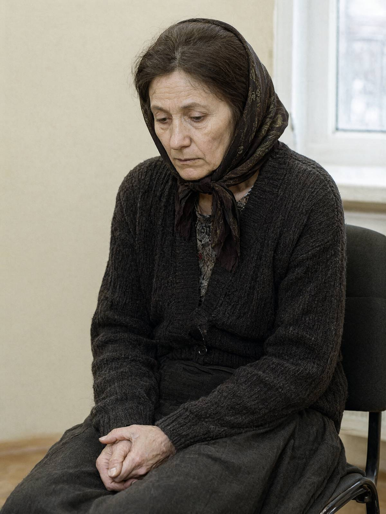

Місто: Івано-Франківськ
Дата: 19.10.2026
Час початку: 10:00 Час закінчення: 10:35
Місце: СУ ГУНП в Івано-Франківській області, вул. Січових Стрільців, каб. 312 (особа прибула за викликом сама, автобусом; чоловік про виклик, за її словами, «не знає»)
Відібрав: майор поліції Волков Д.С., старший слідчий в ОВС СУ ГУНП в Івано-Франківській області
Особа: Бабій Галина Миколаївна, 55 р., директор БФ «Родина» (ЄДРПОУ 44172290), проживає: с. Підгір'я, вул. Лісова, 12.
Особі роз'яснено право не свідчити щодо себе та близьких родичів, зокрема чоловіка (ст. 63 Конституції України). Пояснення надає добровільно. Говорить тихо, двічі просила зачинити двері кабінету.
Питання: Ви — директор БФ «Родина». Розкажіть про вашу роботу.
Відповідь: Я директорка на папері. Так треба було, бо Ярослав — пастор, йому не можна. Я підписую, що дають. Я варю їсти на двадцять п'ять чоловік, перу, лікую, як хтось застудиться. Хлопці мене звуть «мама Галя». Я їх люблю. Вони в мене всі як діти.
Питання: Хто розпоряджається коштами фонду?
Відповідь: Гроші — то Ярослав і бухгалтерка з міста, я в те не лізу. Мені кажуть, де підписати, — я підписую. Я не знаю, скільки там і звідки. Я не вмію з тими цифрами.
Питання: Що ви робили ввечері 15.10?
Відповідь: П'ятнадцятого, з дев'ятої і десь до десятої з хвостиком, я вела вечірню молитву наживо на нашій сторінці у Facebook. Щочетверга веду. Хлопець один, Юрко, ставить мені телефон на підставку, вмикає, а я читаю Псалтир і молюся за тих, хто пише в коментарях. Того вечора багато писали. Я понад годину не вставала. Запис там є, на сторінці, можете подивитися.
Питання: Чи користуєтеся ви месенджером Telegram? Чи пишете в групи?
Відповідь: Телеграмом не користуюся, у мене кнопковий. (показує: кнопковий мобільний телефон «Nokia», старий, з тріснутим корпусом, перемотаним ізоляцією) Я ним тільки дзвоню. І то — сестрі в Коломию. Facebook мені хлопці ведуть, з центрового телефона, я в тому не розуміюся.
Питання: Чи відомо вам, що Артем Гуменюк, ваш реабілітант, живе в Яковишин С.П. як її онук?
Відповідь: (довго мовчить, дивиться на двері) Я знаю, що Артема забрали в місто, до бабусі якоїсь. Мені сказали — так треба, Бог так дав. Я не питала. В нас не питають.
Питання: Чого ви боїтеся, Галино Миколаївно?
Відповідь: Я не боюся. (пауза) Ярослав добрий чоловік. Він просто… він не любить, як я говорю з чужими. Ви йому не кажіть, що я тут довго була. Скажіть, що я тільки підписала.
Питання: Чи знали ви Палійчука В.І.?
Відповідь: Бачила раз чи два, на обсмажувальні, коли хлопців возили. Ввічливий. Каву мені дав у паперовому стаканчику. Я за нього в неділю свічку поставила.
З моїх слів записано вірно, мною прочитано.